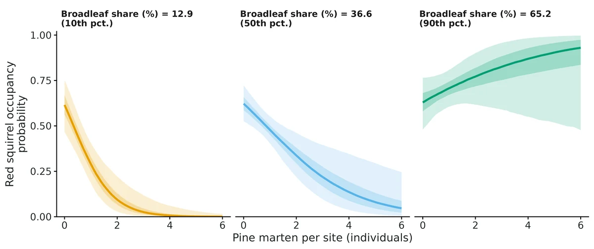
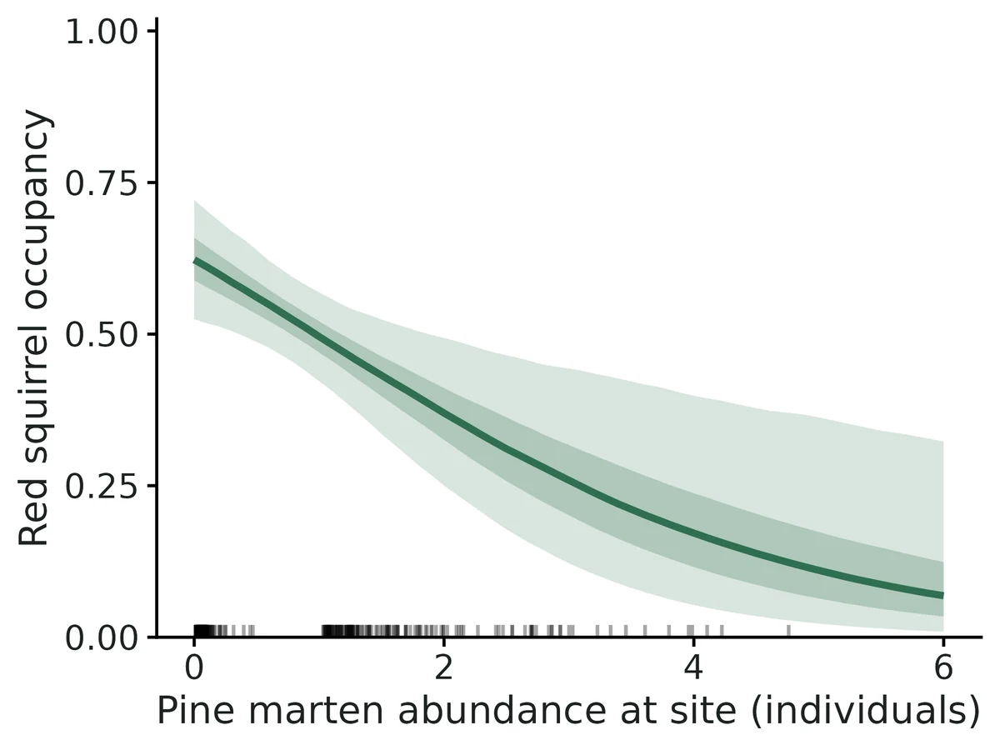
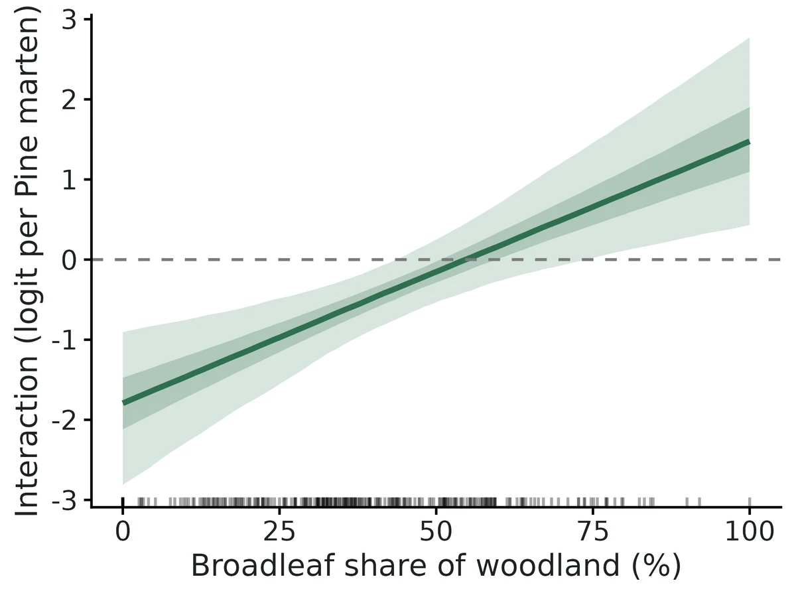
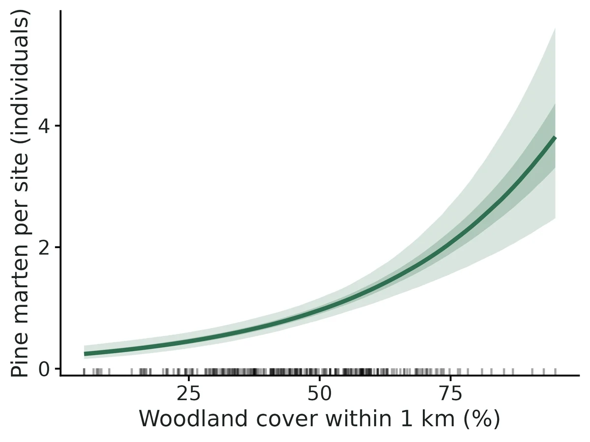

Abundance-mediated species interactions (dominant abundance -> subordinate occupancy)
Is the probability that a subordinate species (red squirrel) occupies a site associated with the number of individuals of a dominant species (pine marten) using that site, and does the strength or even the sign of that association depend on habitat (native broadleaf vs conifer plantation)? It also estimates the dominant species' site abundance and its habitat drivers.
Is this the right analysis?
Use it when
Camera-trap (or other repeated detection/non-detection) surveys of two species where one (dominant, e.g. a predator or competitor) may affect where the other (subordinate) occurs, and the question is whether the subordinate's occupancy is associated with HOW MANY dominant individuals use a site, possibly differently in different habitats.
Not for
Interactions that act through presence/absence only and symmetric co-occurrence (use occu-rota or occu-waddle); fewer than ~300 sites (a habitat-dependent interaction passed the gate at 600 sites in the default design but its size was overstated by ~12% at 700 sites in an independent design; Twining et al. 2025 recommend ~1000 sites; see VALIDATION.md); very rarely detected dominant species (per-individual daily detection well below 0.03, untested); counts of individually identified animals (use scr); temporal avoidance at the scale of hours (activity-overlap analyses).
The data you need
Camera deployments (site, start, end) + detection records (site, date, species), or a summarised site x occasion table of detection days and camera-days; site covariates (habitat), optional coordinates.
What the example's main data file looks like:
| site | camera_id | start_date | end_date |
|---|---|---|---|
| NI001 | C001 | 2024-03-02 | 2024-03-29 |
| NI002 | C002 | 2024-03-05 | 2024-04-01 |
| NI003 | C003 | 2024-03-05 | 2024-04-01 |
| NI004 | C004 | 2024-03-07 | 2024-04-03 |
| NI005 | C005 | 2024-03-12 | 2024-04-08 |
Not sure? Use the finder to compare modules.
The worked example
Abundance-mediated species interactions: pine marten abundance and red squirrel occupancy (simulated camera-trap example)
The question: Is red squirrel occupancy lower at sites used by more pine martens, and does that association depend on the share of native broadleaf woodland?
The data are simulated, so the true answer is known and the analysis can be checked against it.
What the researcher typed
I have camera-trap data from 260 woodland sites in Northern Ireland: deployments.csv (camera start and end dates), records.csv (every photo, with species) and sites.csv (woodland cover and broadleaf share within 1 km). Is red squirrel occupancy lower where there are more pine martens, and does that depend on how much of the woodland is native broadleaf? Please give me a report with figures I can use in a paper.
Run it yourself
Download the example data below and unzip it.
Open the unzipped folder in Claude Code (see Install).
Paste the prompt above. The agent checks the files, writes a plan, runs planted truth, fits the model and writes the report. You can compare your results with the ones below.
Contains deployments.csv, records.csv, sites.csv, the settings file (config.yaml), a description of the data and a step-by-step walkthrough.
Study design details
| n sites | 260 |
|---|---|
| n occasions | 4 |
| days per occasion | 7 |
| camera days total | 6939 |
| prop site occasions effort loss | 0.089 |
| prop site occasions no effort | 0.03 |
| habitat interaction | True |
| interaction modifier | broadleaf_pct |
| lambda formula | ~ woodland_pct |
| psi formula | ~ woodland_pct + broadleaf_pct |
| data simulated | True |
| data seed | 2024 |
| nsim recovery | 100 |
Results from the example data

In plain language
- Each 1-SD increase in woodland_pct (1 SD = 17.4 units) is associated with 1.70 (95% CI 1.47 to 1.96) times the expected Pine marten abundance (a +70% change) (per 10 units: rate ratio 1.36 (95% CI 1.25 to 1.47)).
- Interaction at average habitat: each additional Pine marten individual at a site is associated with 0.59 (95% CI 0.39 to 0.85) times the odds that Red squirrel occupies the site (odds ratio per individual); on the logit scale the coefficient is -0.53 (95% CI -0.93 to -0.17) per individual. The posterior probability that the association is negative is > 0.99.
- Predicted Red squirrel occupancy at average habitat: 0.62 (0.52-0.72) at a site with no Pine marten, 0.50 (0.42-0.57) with 1, 0.37 (0.25-0.49) with 2 and 0.26 (0.12-0.44) with 3 individuals (posterior medians, 95% CI).
- Habitat dependence: the interaction changes by 0.69 (95% CI 0.30 to 1.14) logit units per individual for each 1-SD (20.8 units) increase in broadleaf_pct; the 95% interval excludes zero, so the data support an interaction whose strength depends on habitat.
- Where broadleaf_pct = 12.9 (10th percentile): odds ratio per Pine marten individual 0.25 (95% CI 0.12 to 0.50) (negative).
- Where broadleaf_pct = 65.2 (90th percentile): odds ratio per Pine marten individual 1.42 (95% CI 0.84 to 2.53) (not clearly different from zero).
- Comparison with the common two-step shortcut (estimate Pine marten abundance first, then use it as a fixed covariate): the shortcut gives -0.48 (95% CI -0.81 to -0.15), with an interval 86% as wide as the joint model's. The joint model carries the uncertainty in each site's abundance into the interaction; the shortcut treats estimated abundance as if it were known, and in simulations it is biased towards zero with too-narrow intervals.
- Caution: this is an association between the dominant's estimated abundance and the subordinate's occupancy, not proof of predation or competition. Unmodelled habitat preferences shared (or opposed) by the two species produce the same signal, so include the main habitat drivers of both species. Royle-Nichols abundance assumes individuals are detected independently and abundance is Poisson among sites; absolute abundance is less reliable than relative differences. Simulation checks for this module (VALIDATION.md) recovered the interaction without bias at 600 sites (4 weekly occasions of daily records), including when the dominant's per-individual daily detection was as low as 0.03; in an independent check with 700 sites and a weaker interaction its size was overstated by about 12%, and with 150-300 sites by roughly 10-20% (credible intervals kept near-nominal coverage). With fewer than about 1000 sites, read the interval rather than the point estimate.
More figures



Figures are the module's default publication figures, reduced for the web. The report also saves them as PDF and full-resolution PNG.
Planted truth at the example's design
Before trusting the example's results, the module was run on many simulated data sets with the same design and known true values. Each row is one quantity: did the method get it back? (What the thresholds are.)
What OPEN means here. The module works (it passes at its default design), but at this example's design not every quantity passed the planted-truth check, so CascadiaTools does not certify those. 11 of the 12 quantities checked passed outright. For psi beta dominant abundance, the estimate was biased (by up to 11%); don't interpret those at this design. The quantities that passed can be used as reported. With your own data, the report would say the same and suggest what would help: more data, a simpler model or a different estimator. More on DONE and OPEN.
Why, for this example:
Planted truth at the example design (260 sites) fails for gamma0 (psi_beta_dominant_abundance): relative bias -11.0% (limit 10%; 3.2 MCSE) with coverage 0.95. Known limit 1 in VALIDATION.md. Convergence, GOF, cross-checks, negative control and reproducibility pass. Read the gamma0 interval, not its point estimate.
11 of 12 rows pass.
| Quantity | True value | Average estimate | Bias | Coverage | Result |
|---|---|---|---|---|---|
| dominant_detection_per_individual | 0.08 | 0.0814 | +1.7% | 0.97 | ✓ PASS |
| dominant_mean_abundance | 1 | 0.986 | -1.4% | 0.96 | ✓ PASS |
| dominant_prop_occupied | 0.63 | 0.629 | -0.2% | 0.92 | ✓ PASS |
| dominant_total_abundance | 293.6 | 292.8 | -0.3% | 0.98 | ✓ PASS |
| lambda_beta_woodland | 0.5 | 0.507 | +1.5% | 0.94 | ✓ PASS |
| psi_beta_broadleaf | 0.3 | 0.365 | +21.8% | 0.95 | ✓ PASS |
| psi_beta_dominant_abundance | -0.6 | -0.666 | -11.0% | 0.95 | ✗ FAIL |
| psi_beta_dominant_abundance_x_broadleaf | 0.6 | 0.655 | +9.1% | 0.96 | ✓ PASS |
| psi_beta_woodland | 0.5 | 0.551 | +10.2% | 0.92 | ✓ PASS |
| subordinate_detection | 0.15 | 0.15 | +0.2% | 0.95 | ✓ PASS |
| subordinate_occupancy_no_dominant | 0.6 | 0.61 | +1.6% | 0.92 | ✓ PASS |
| subordinate_prop_occupied | 0.464 | 0.465 | +0.2% | 1 | ✓ PASS |
Limits that matter
- 260 sites is below the ~600 sites validated for a habitat-dependent interaction; at this design gamma0 is overstated by ~11% (coverage stays 0.95). Read intervals, not point estimates.
- The broadleaf main effect on red squirrel occupancy is weakly identified at this design (planted-truth power 0.34).
- Association, not causation: unmodelled habitat shared by both species loads onto the interaction term.
- Royle-Nichols assumptions (Poisson abundance, independent detection of individuals, closure over 4 weeks) were not stress-tested; group-living or overdispersed martens would bias abundance and the interaction. The posterior predictive check is the only guard.
- Abundance is the number of martens using a camera site, not a density; one marten can use several sites.
- The two-step plug-in shortcut fails the gate (attenuated, overconfident) and is shown for comparison only.
All known limits from the module's validation record
- Fewer than ~600 sites with a habitat-varying interaction. At 300 sites gamma1 is biased +19% (Nimble) / +11% (ML on the same data), and the gate fails. At 150 sites the biases are -18% (gamma0) and +23% (gamma1). Interval coverage stays near nominal, so CrIs can still be read. The point estimate overstates the strength of the interaction. A constant interaction (no habitat term) is better determined, but it was not separately gate-tested below 600 sites.
- Dominant per-individual detection at the default (r = 0.10) at 300 sites: coverage of r was 0.86 (bound 0.885). At 600 sites it is 0.93.
- Low dominant detection (r = 0.03/day) passes at 600 sites. Lower values and fewer sites were not tested. Expect interactions to be weakly identified there, and look at the width of the CrI.
- Royle-Nichols assumptions (Poisson N, independent and identical detection of individuals, closure) were not stress-tested. Overdispersed or group-living dominants will bias N_i and so gamma. The posterior predictive check is the only guard, and its power was not measured.
- Direction and causality: the model assumes A affects S's occupancy and that S's detection does not depend on N_A. Shared unmodelled habitat drivers load onto gamma. Reports state "associated with", not "caused by".
- Two-step engine fails the gate (attenuated, overconfident). It is shown for comparison only.
- Run time: about 6 min per Nimble fit at 600 sites with fast settings (1 core per replicate); the full default settings took 7.7 min at 260 sites (4 cores, incl. GOF and two-step). Scale roughly linearly in sites.
- Not implemented: abundance (N-mixture) model for the subordinate; time-varying (dynamic) interactions; more than two species; spatially explicit N (SCR) for the dominant; covariates on the subordinate's detection that involve N_A.
Engine, references and full details
Engine: nimble (joint Bayesian, default); ml (exact marginal likelihood, cross-check); twostep (unmarked occuRN + occu plug-in, comparison only).
References
- Twining JP, Augustine BC, Royle JA, Fuller AK (2025) Abundance-mediated species interactions. Ecology 106(1):e4468. doi:10.1002/ecy.4468
- Twining JP, Sutherland C, Reid N, Tosh DG (2022) Habitat mediates coevolved but not novel species interactions. Proc R Soc B 289:20212338. doi:10.1098/rspb.2021.2338
- Twining JP, Lawton C, White A, Sheehy E, Hobson K, Montgomery WI, Lambin X (2022) Restoring vertebrate predator populations can provide landscape-scale biological control of established invasive vertebrates: insights from pine marten recovery in Europe. Global Change Biology 28:5368-5384. doi:10.1111/gcb.16236
- Royle JA, Nichols JD (2003) Estimating abundance from repeated presence-absence data or point counts. Ecology 84:777-790.
- Waddle JH et al. (2010) A new parameterization for estimating co-occurrence of interacting species. Ecological Applications 20:1467-1475.
- Rota CT et al. (2016) A multispecies occupancy model for two or more interacting species. Methods Ecol Evol 7:1164-1173.
- Fiske I, Chandler R (2011) unmarked. J Stat Softw 43(10). de Valpine P et al. (2017) NIMBLE. J Comput Graph Stat 26:403-413.